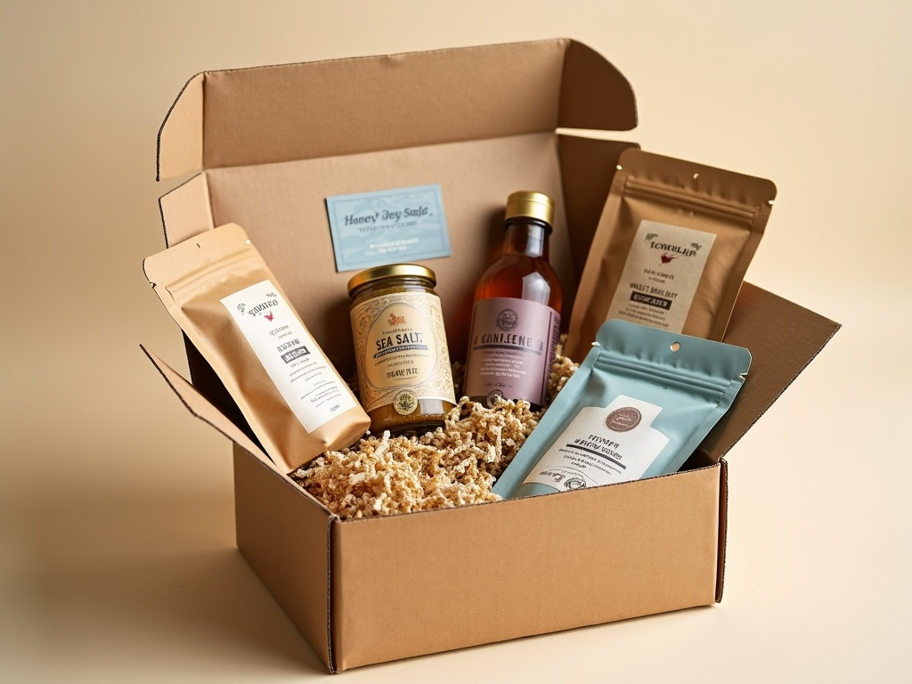

01
Saltcure Sea Salt Flakes
Hand-harvested flake salt in a refillable tin. $14.
Hand-harvested · since 2019
Sea salt, single-origin cold-brew, raw honey and smoked kelp — provisioned from the harbor and shipped to your door, or poured at the Dockside Café.
What you get
Hand-harvested flake salt in a refillable tin. $14.
32oz single-origin concentrate, slow-steeped. $22.
Raw, unfiltered 12oz from coastal apiaries. $16.
Selected work
A monthly curated box of coastal pantry goods — rotating salt, honey, cold-brew and seasonings, with the story of each maker. 40,000+ boxes shipped, 4.9★ across 2,300 reviews.

By the numbers
Hand-harvested · since 2019
Start a Provisioning Box, shop the pantry, or visit the Dockside Café on the harborfront.
These values flow into harborline/design-system/tokens.css the moment Direction A is picked. Every downstream surface skins from them via the wow-* classes — no second visual decision. (Spec: BRAND-TOKEN-SCHEMA.md §Globals overlay + GLOBALS-OVERLAY-SPEC.md.)
| --ds-glass-bg | rgba(250,244,232,0.72) | |
|---|---|---|
| --ds-glass-blur | blur(16px) saturate(150%) | |
| --ds-glass-border | rgba(20,50,63,0.10) | |
| --ds-hairline | rgba(20,50,63,0.10) | |
| --ds-inset-hi | inset 0 1px 0 rgba(255,255,255,0.55) | |
| --ds-glow | 0 10px 30px rgba(200,146,62,0.32) | |
| --ds-glow-wash | radial-gradient(60% 70% at 70% 18%, rgba(200,146,62,0.18), transparent 70%) | |
| --ds-grain | url("data:image/svg+xml,%3Csvg xmlns='http://www.w3.org/2000/svg' width='120' height='120'%3E%3Cfilter id='n'%3E%3CfeTurbulence type='fractalNoise' baseFrequency='0.9' numOctaves='2'/%3E%3C/filter%3E%3Crect width='100%25' height='100%25' filter='url(%23n)' opacity='0.04'/%3E%3C/svg%3E") | |
| --ds-divider-h | 80px | |
| --ds-dur-fast | 160ms | |
| --ds-dur-slow | 600ms | |
| --ds-ease-out | cubic-bezier(.2,.6,.2,1) |